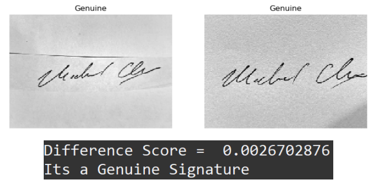

Sig-No Fraud: Signature forgery detection using Siamese Convolutional Neural Networks
BACKGROUND
Signature verification is historically a challenging task in biometrics and document forensics due to the possibility of small details that a fraudulent signature may contain. We used an existing paper to implement a Siamese convolutional neural network, coined SigNet, a twin network with shared weights that observes similar observations placed in proximity in order to learn a feature space. By exposing the network to similar and dissimilar observations, the model tries to minimize the Euclidean distance between similar pairs while simultaneously maximizing it between dissimilar pairs. The paper was capable of detecting forgery in different languages and handwriting styles, classifying signatures as genuine or forged.
Methodology
Preprocessing
We used 3 datasets:
CEDAR: 1320 forged & 1320 genuine English signatures
BHSig260: 7800 forged & 6240 Bengali or Hindu signatures
mchen77: 24 forged & 24 genuine English signatures
In order to convert the signatures to a usable format, we converted each image into a Numpy array with the shape (155, 220), where each index has a value from 0-255. Because the network takes in two images as the input, we also created pairs of genuine/genuine and genuine/forged signatures.
Architecture
We followed the same model architecture as the Signet research paper, which can be seen in the image above. This is a Siamese convolutional neural network, which is a network that contains two identical CNN subnetworks. The parameters in the subnetwork have mirrored updates. A contrastive loss function is used, so that it will calculate the similarity using Euclidean distance. Given two signatures, the model will output that it is genuine if the signatures are similar, and output false if the signatures are dissimilar.
Hyperparameters
We used two sets of hyperparameters for our model:
RMSProp
batch_size: 32
activation: relu
learning_rate: 0.0001
rho: 0.9
epsilon: 1e-8
optimizer: RMSProp
epochs: 100
Adam
batch_size: 32
activation: relu
learning_rate: 0.001
beta_1: 0.9
beta_2: 0.999
epsilon: 1e-8
optimizer: Adam
epochs: 100
Training & Testing
We trained the model by passing in pairs of genuine/genuine signatures and genuine/forged signatures into the network, and let Tensorflow update the weights for 100 epochs. For gradient descent, we used the following contrastive loss function, since it will bring images of the same class closer together:
During testing, we found the threshold and maximum accuracy of the trained model using the testing set. The threshold is a value representing the maximum distance two signatures can have and still be similar. The threshold was found by finding the value that maximized the accuracy of the model.
Results
We first trained and tested the model using the same optimizer as the research paper, RMSprop. Below are the results:
The accuracy of our model was lower than that of the research paper (100%). However, we were able to achieve much greater accuracy by using a different optimizer, Adam. Below are the results:
We also tested the model on a group member’s signature, and it was able to detect that the signature was forged.

Discussion
We were able to achieve an accuracy of 0.99 using the Adam optimizer, and an accuracy of 0.86 using the RMSprop optimizer, which is slightly lower than the accuracy achieved by the research paper. This could be attributed to using more datasets, since we additionally used the BHSig260 dataset, which has non-English signatures (Hindu and Bengali).
The model trained by the Adam optimizer had a higher accuracy and a lower rate of false negatives, but a higher rate of false positives, compared to that of the model trained using the RMSprop optimizer. This was likely due to the lower difference threshold it found.
Challenges
Throughout this project, we ran into various challenges:
Preprocessing: Preprocessing required a lot of careful manipulation of types and shapes to get the ideal preprocessed data to be run. These parameters, such as image dimensions and train/test/validation batching can be altered to yield better results, but we also needed to be aware of our own compute limitations when tuning these parameters.
Model Implementation: Although the research paper had a good diagram for showing the different parts of the model, it was difficult to apply it to actual code. Additionally, linking up the preprocessed data so that it works on the model’s functions was challenging, since we didn’t have to work on that part in previous assignments.
Large Datasets: Because the datasets that we used were large, it took a long time to train and test the model. We were unable to use the entire BHSig260 dataset, because we were limited by the amount of computing power.
Summary & Takeaways
In this project, we implemented a Siamese convolutional neural network to detect forged signatures, which obtained over 90% accuracy. We had the following takeaways:
We learned a lot more about Siamese convolutional neural networks and contrastive loss functions, which we had never used before.
Preprocessing data is a very difficult and lengthy task, especially when dealing with image data because of the amount of reshaping that needs to be done.
Training and testing neural network models take lots of time! If we had more time, we could have tried more optimizations and tested our model on a wider range of datasets. Different loss functions could also be explored other than Euclidean distance, such as cosine similarity.
Furthermore, our current model focuses on offline signature forgery detection, but we could also extend this to electronic, or “online”, signatures which also take into account stroke order and speed.